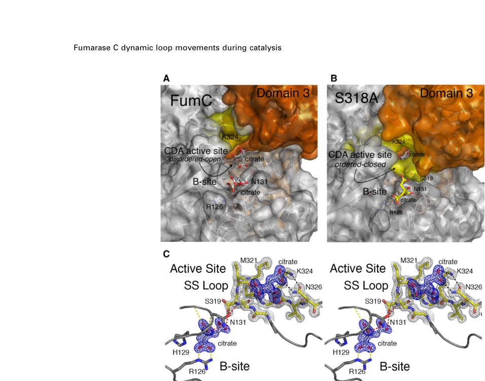

Fumarate hydratase class II (fumarase C, FumC; EC 4.2.1.2), encoded by fumC (fumC-2 / PP_1755), one of three fumarase isoenzymes in Pseudomonas putida KT2440 (alongside fumA/PP_0897 and fumC1/PP_0944). It is a cytoplasmic, iron-independent homotetrameric enzyme that catalyzes the reversible, stereospecific hydration/dehydration of fumarate and (S)-malate ((S)-malate = fumarate + H2O), the step of the tricarboxylic acid (TCA) cycle that interconverts fumarate and L-malate. Unlike class I fumarases, which contain an oxygen-sensitive [4Fe-4S] cluster, class II fumarases lack a metal cofactor and are oxidant-resistant, allowing them to maintain TCA-cycle flux under oxidative/nitrosative stress. The enzyme belongs to the class-II fumarase/aspartase (fumarate lyase) family, with a conserved multi-domain fold; active sites are formed at subunit interfaces and include a catalytic A site and a non-catalytic B site.
| GO Term | Evidence | Action | Reason |
|---|---|---|---|
|
GO:0003824
catalytic activity
|
IEA
GO_REF:0000002 |
MARK AS OVER ANNOTATED |
Summary: Root-level catalytic activity term; correct but uninformative given the specific fumarate hydratase activity is also annotated.
Reason: GO:0003824 is a high-level grouping term. The more specific GO:0004333 (fumarate hydratase activity) is annotated and fully captures the molecular function, making this generic term redundant and uninformative.
|
|
GO:0004333
fumarate hydratase activity
|
IEA
GO_REF:0000120 |
ACCEPT |
Summary: Core molecular function. FumC is a class II fumarate hydratase (EC 4.2.1.2) catalyzing (S)-malate = fumarate + H2O.
Reason: Strongly supported by HAMAP-Rule MF_00743, the class-II fumarase/aspartase family assignment, conserved active-site residues, and KT2440 evidence that FumC-type isoenzymes provide compensatory fumarase activity. This is the central function of the gene.
|
|
GO:0005737
cytoplasm
|
IEA
GO_REF:0000120 |
ACCEPT |
Summary: FumC is a soluble cytoplasmic enzyme, consistent with its role in the cytosolic bacterial TCA cycle.
Reason: UniProt subcellular location (HAMAP-Rule MF_00743) and the soluble nature of class II fumarases support cytoplasmic localization. No signal peptide or membrane-targeting features are present.
|
|
GO:0006099
tricarboxylic acid cycle
|
IEA
GO_REF:0000120 |
ACCEPT |
Summary: Core biological process. The fumarate-to-malate step is a canonical reaction of the TCA cycle.
Reason: Directly supported by the UniProt pathway annotation (tricarboxylic acid cycle; (S)-malate from fumarate, step 1/1) and the enzyme's well-established role in central carbon metabolism.
|
|
GO:0006106
fumarate metabolic process
|
IEA
GO_REF:0000120 |
KEEP AS NON CORE |
Summary: Correct but more general than the TCA cycle annotation; fumarate is the substrate of the catalyzed reaction.
Reason: Accurate (the enzyme acts on fumarate) but a broad parent process. The TCA cycle annotation is the more informative core process; this is retained as a supporting, non-core term.
|
|
GO:0006108
malate metabolic process
|
IEA
GO_REF:0000118 |
KEEP AS NON CORE |
Summary: Correct but general; (S)-malate is the product/substrate of the reversible reaction.
Reason: Accurate given malate is directly produced/consumed, but a broad parent process relative to the TCA cycle. Retained as supporting, non-core.
|
|
GO:0016829
lyase activity
|
IEA
GO_REF:0000120 |
MARK AS OVER ANNOTATED |
Summary: High-level parent of the specific fumarate hydratase (a hydro-lyase) activity.
Reason: GO:0016829 is a grouping term subsuming the specific GO:0004333 fumarate hydratase activity already annotated. It is not wrong (FumC is a hydro-lyase) but is redundant and uninformative.
|
The research report should be a detailed narrative explaining the function, biological processes, and localization of the gene product. Citations should be given for all claims.
You should prioritize authoritative reviews and primary scientific literature when conducting research. You can supplement
this with annotations you find in gene/protein databases, but these can be outdated or inaccurate.
We are specifically interested in the primary function of the gene - for enzymes, what reaction is catalyzed, and what is the substrate specificity? For transporters, what is the substrate? For structural proteins or adapters, what is the broader structural role? For signaling molecules, what is the role in the pathway.
We are interested in where in or outside the cell the gene product carries out its function.
We are also interested in the signaling or biochemical pathways in which the gene functions. We are less interested in broad pleiotropic effects, except where these elucidate the precise role.
Include evidence where possible. We are interested in both experimental evidence as well as inference from structure, evolution, or bioinformatic analysis. Precise studies should be prioritized over high-throughput, where available.
The target protein UniProt Q88M20 is annotated as class II fumarate hydratase (fumarase C), EC 4.2.1.2, encoded by fumC and mapped to the ordered locus PP_1755 in Pseudomonas putida KT2440.
A KT2440-focused study explicitly enumerates three fumarase loci in this organism—fumA (PP_0897), fumC1 (PP_0944), and fumC2 (PP_1755)—thereby anchoring PP_1755 as fumC2, consistent with the UniProt accession provided and disambiguating it from fumC genes in other bacteria. (carvajal2014nuevosaspectosdel pages 144-147)
Fumarate hydratase (fumarase; EC 4.2.1.2) catalyzes the reversible interconversion of fumarate and L-malate (S-malate)—a canonical step of the tricarboxylic acid (TCA; Krebs; citrate) cycle. (stuttgen2020closedfumarasec pages 1-2, vugtlussenburg2013biochemicalsimilaritiesand pages 1-2)
For class II fumarase (FumC-type) specifically, structural/biochemical work defines the reaction as fumarate ↔ S-malate and places it explicitly in the Krebs cycle, with the enzyme functioning as a homotetramer in bacteria. (stuttgen2020closedfumarasec pages 1-2, stuttgen2020closedfumarasec pages 7-9)
Bacteria can encode multiple fumarase isoenzymes spanning two biochemical families:
This distinction matters biologically because it motivates isoenzyme switching under oxidative stress and provides a mechanism for maintaining TCA flux when Fe–S enzymes are compromised. (lu2019aconservedmotif pages 6-7)
High-resolution structures and kinetics of bacterial FumC (used here as mechanistic inference for the KT2440 homolog) show:
These mechanistic points support a confident functional annotation of Q88M20 as a cytosolic TCA-cycle enzyme catalyzing fumarate↔L-malate, and they contextualize why multiple fumarase isoenzymes may coexist. (stuttgen2020closedfumarasec pages 1-2, stuttgen2020closedfumarasec pages 7-9)
Structural figure evidence (FumC): Open/closed SS Loop conformations, tetramer/active-site organization, and residue-level interactions are shown in retrieved figures from Stuttgen et al. (stuttgen2020closedfumarasec media 2ed2f20e, stuttgen2020closedfumarasec media 427f7b9b, stuttgen2020closedfumarasec media b221f39b)
In a 2024 genome-scale-model (GSMM) guided engineering study in KT2440, the fumarase (FUM) reaction is linked to three genes: PP_0897, fumC1/PP_0944, and fumC2/PP_1755, with PP_1755 (fumC2) described as non-essential under the tested conditions. Specifically, deletion of PP_1755 and/or PP_0944 had no impact on viability in rich media or M9 minimal media with p-coumarate as carbon source, indicating redundancy at the level of supporting the FUM reaction under these contexts. (banerjee2024bottlenecksinthe pages 3-5)
A KT2440 mutant perturbation study (ΔapaH background) provides direct evidence that fumC2/PP_1755 is upregulated and can contribute to compensatory fumarase activity:
Collectively, these observations support the functional role of PP_1755/Q88M20 as an active fumarase isoenzyme in KT2440 and show that its contribution can increase under specific perturbations. (carvajal2014nuevosaspectosdel pages 144-147)
In a quantitative proteomics study of KT2440 responses to chlorophenoxy herbicides and metabolites, a specific metabolite (DCC) caused a distinct proteome response and fumarase C abundance was notably reduced. The study used a DCC concentration that produced ~50% growth-rate reduction, reported as 0.07 mM DCC for KT2440, and observed fewer proteome changes under DCC than other compounds (35 proteins changed under DCC). (benndorf2006pseudomonasputidakt2440 pages 3-5)
This indicates that fumarase C levels are responsive to chemical stressors in KT2440, though the directionality (decrease here) likely reflects broader physiological constraints (e.g., ATP limitation due to uncoupling) rather than a simple “oxidative stress induction” rule. (benndorf2006pseudomonasputidakt2440 pages 3-5)
A review focused on oxidative stress in P. putida reports that fumC-1 is induced in KT2440 under superoxide and nitric oxide stress, and that this induction appears independent of SoxR in KT2440 (contrasting enteric SoxRS paradigms). (kim2014oxidativestressresponse pages 5-6)
This supports a broader interpretation that fumarase C-type isoenzymes are integrated into oxidative/nitrosative stress physiology in P. putida; however, the cited review statement refers to fumC-1 (PP_0944) rather than fumC2 (PP_1755), and it does not supply fold-changes in the excerpted text. (kim2014oxidativestressresponse pages 5-6)
Under phenol exposure, the Fur regulator is reported as upregulated in KT2440, and the authors note (citing prior work) that Fur represses targets including fumC. This provides a plausible regulatory link between phenol-induced iron/oxidative stress responses and fumarase isoenzyme expression, but the excerpt does not provide direct fumC expression quantitation for phenol exposure. (santos2004insightsintopseudomonas pages 9-10)
Direct KT2440-specific subcellular localization experiments for FumC2/PP_1755 were not found in the retrieved texts. Nevertheless, the relevant functional context is strongly consistent with a cytosolic enzyme:
Thus, the best evidence-supported statement is that FumC2 functions intracellularly as part of central metabolism, with localization most consistent with the cytosol, but direct localization evidence is not available in the current corpus. (stuttgen2020closedfumarasec pages 1-2, benndorf2006pseudomonasputidakt2440 pages 3-5)
FumC catalyzes the fumarate↔malate step of the TCA cycle, supporting energy generation, redox balance, and provision of biosynthetic precursors. (stuttgen2020closedfumarasec pages 1-2, vugtlussenburg2013biochemicalsimilaritiesand pages 1-2)
Mechanistic work on fumarase families emphasizes that class II fumarases (FumC-type) are oxidant-resistant because they lack an Fe–S cluster, whereas class I fumarases are oxidant-sensitive; class II fumarases can be induced by oxidative stress and thereby serve as a contingency enzyme to preserve TCA flux when Fe–S enzymes are damaged by peroxide-related chemistry. (lu2019aconservedmotif pages 1-2, lu2019aconservedmotif pages 6-7)
In KT2440, this conceptual framework is consistent with observed induction of a fumarase C isoenzyme under certain perturbations (ΔapaH) and oxidative/nitrosative stress (fumC-1 induction under superoxide/NO). (carvajal2014nuevosaspectosdel pages 144-147, kim2014oxidativestressresponse pages 5-6)
A 2024 bioRxiv preprint on implementing GSMM-based designs in P. putida KT2440 (p-coumarate utilization coupled to glutamine/indigoidine production) identifies the fumarate hydratase (FUM) reaction as a key rate-limiting / tightly constrained node in aromatic catabolism.
Key results (2024):
Implication for fumC2 annotation: While fumC2/PP_1755 is non-essential in these experiments, it is part of a redundant fumarase repertoire that determines whether the FUM reaction can be tuned/retained under strong selection pressures in bioproduction settings. (banerjee2024bottlenecksinthe pages 3-5, banerjee2024bottlenecksinthe pages 7-10)
Given (i) explicit KT2440 locus mapping of PP_1755 as fumC2, (ii) observed compensation and increased FumC-specific activity in a KT2440 mutant, and (iii) consistent biochemical mechanism of class II fumarases, the most evidence-supported functional annotation is:
Within the evidence retrieved here, the most defensible substrate description is specificity for fumarate and S-malate in the TCA cycle, with one detailed FumC kinetic/structural study indicating greater affinity for fumarate than malate (3.8-fold), and mutational analyses showing SS Loop residues primarily affect turnover. (stuttgen2020closedfumarasec pages 7-9)
The strongest mechanistic rationale, supported by authoritative mechanistic work, is that iron-dependent class I enzymes are susceptible to oxidative inactivation, whereas class II fumarases are oxidant-resistant and can sustain metabolic flux during oxidative stress; this is a plausible driver for maintaining fumC-type isoenzymes. KT2440 data are consistent with inducible fumarase C-type behavior under perturbations. (lu2019aconservedmotif pages 6-7, carvajal2014nuevosaspectosdel pages 144-147, kim2014oxidativestressresponse pages 5-6)
Although direct localization experiments were not retrieved, the combined evidence supports that Q88M20 operates as a soluble intracellular enzyme in central metabolism. The presence of the enzyme in 2D-gel proteomic datasets and its role in the cytosolic TCA cycle are consistent with a cytosolic localization, but this remains an inference within the current evidence set. (stuttgen2020closedfumarasec pages 1-2, benndorf2006pseudomonasputidakt2440 pages 3-5)
| Evidence type | Key finding | Quantitative details | Experimental context | Source (authors, year, journal, DOI URL) | Citation ID |
|---|---|---|---|---|---|
| Annotation | In Pseudomonas putida KT2440, the genome encodes three fumarase isoenzymes: fumA (PP_0897), fumC1 (PP_0944), and fumC2 (PP_1755). This supports identification of UniProt Q88M20 as fumC2/PP_1755. | Three fumarase loci identified | KT2440 gene inventory and isoenzyme assignment in analysis of the ΔapaH mutant | Agulló Carvajal, 2014, thesis/dissertation, DOI URL: not available in retrieved context | (carvajal2014nuevosaspectosdel pages 144-147) |
| Biochemistry | FumC2 (PP_1755) appears able to compensate for altered fumarase function in KT2440, consistent with assignment as a fumarase C-type isoenzyme. | FumC2 induced ~4-fold; FumA repressed ~1.3-fold; total fumarase activity similar between WT and ΔapaH; FumC-specific activity significantly higher in ΔapaH | Proteomic and enzymatic analysis of P. putida KT2440 ΔapaH | Agulló Carvajal, 2014, thesis/dissertation, DOI URL: not available in retrieved context | (carvajal2014nuevosaspectosdel pages 144-147) |
| Stress response | A fumC homolog in KT2440 (fumC-1) is induced by superoxide and nitric oxide stress, supporting the broader role of fumarase C isoenzymes in oxidative stress adaptation in P. putida. | Qualitative induction reported; no fold-change given in extracted text | Oxidative stress response review summarizing KT2440 gene induction data | Kim and Park, 2014, Applied Microbiology and Biotechnology, https://doi.org/10.1007/s00253-014-5883-4 | (kim2014oxidativestressresponse pages 5-6) |
| Stress response | Fumarase C abundance decreases under DCC herbicide-metabolite stress in KT2440, indicating fumarase isoenzymes respond dynamically to chemical stress. | DCC at 0.07 mM caused ~50% growth-rate reduction; 35 proteins changed under DCC; fumarase C among the most conspicuously decreased proteins | Quantitative proteomics of KT2440 exposed to chlorophenoxy herbicides/metabolites | Benndorf et al., 2006, PROTEOMICS, https://doi.org/10.1002/pmic.200500781 | (benndorf2006pseudomonasputidakt2440 pages 3-5) |
| Stress response / concept | Class II fumarases such as FumC are iron-independent and oxidant-resistant, providing a mechanistic rationale for fumarase C deployment when Fe–S fumarases are vulnerable. | Class II described as iron-free/oxidant-resistant; no KT2440-specific numeric values | Review/mechanistic framework for bacterial oxidative stress and fumarase class switching | Lu and Imlay, 2019, Redox Biology, https://doi.org/10.1016/j.redox.2019.101296 | (lu2019aconservedmotif pages 1-2, lu2019aconservedmotif pages 6-7) |
| Biochemistry / mechanism | FumC catalyzes the reversible conversion fumarate ↔ S-malate in the TCA cycle; class II fumarases are homotetrameric and iron-independent. | Fumarate affinity reported as 3.8-fold greater than for S-malate in the extracted structural/kinetic study | Structural/kinetic analysis of bacterial class II FumC (non-KT2440 homolog used for mechanistic inference) | Stuttgen et al., 2020, FEBS Letters, https://doi.org/10.1002/1873-3468.13603 | (stuttgen2020closedfumarasec pages 1-2, stuttgen2020closedfumarasec pages 7-9) |
| Metabolic engineering | In a 2024 KT2440 GSMM-guided engineering study, PP_1755/fumC2 and PP_0944/fumC1 were non-essential individually or together under tested conditions, indicating redundancy among fumarase isoenzymes. | Deletion of PP_1755 and/or PP_0944 had no impact on viability in rich or M9 p-coumarate media | Growth-coupled design for p-coumarate utilization and glutamine/indigoidine production | Banerjee et al., 2024, bioRxiv, https://doi.org/10.1101/2024.03.15.585139 | (banerjee2024bottlenecksinthe pages 3-5) |
| Metabolic engineering | The fumarase node is nevertheless critical in KT2440 aromatic carbon bioconversion; severe phenotypes emerge when the remaining dominant fumarase PP_0897 is perturbed, highlighting functional interplay with fumC isoenzymes. | Complete cutset strain failed on M9 p-coumarate agar and showed no detectable indigoidine; promoter tuning of PP_0897 gave up to 5-fold higher specific indigoidine productivity per cell and up to 2.4-fold higher glutamate pools | Genome-scale model implementation and strain engineering for p-coumarate-to-product conversion | Banerjee et al., 2024, bioRxiv, https://doi.org/10.1101/2024.03.15.585139 | (banerjee2024bottlenecksinthe pages 3-5, banerjee2024bottlenecksinthe pages 5-7) |
| Metabolic engineering / systems biology | FUM flux is tightly constrained for growth-coupled production from p-coumarate, showing why fumarase activity is a systems-level bottleneck even when PP_1755 itself is non-essential. | Max glutamine state: FUM 19.88 mmol/gDCW/h with 0.43 h^-1 growth; max biomass state: FUM 26.44 mmol/gDCW/h; at ~20 mmol/gDCW/h, ~0.45 h^-1 growth and 8.61 mmol/gDCW/h glutamine (0.86 mol/mol) | Proteomics-constrained modeling and experiments in engineered KT2440 | Banerjee et al., 2024, bioRxiv; Banerjee et al., 2025, NPJ Systems Biology and Applications, https://doi.org/10.1101/2024.03.15.585139; https://doi.org/10.1038/s41540-024-00480-z | (banerjee2024bottlenecksinthe pages 7-10, banerjee2025addressinggenomescale pages 5-5) |
Table: This table summarizes the strongest available evidence for fumarase isoenzymes in Pseudomonas putida KT2440, emphasizing fumC2/PP_1755 (UniProt Q88M20). It highlights identity verification, biochemical role, stress-response behavior, and recent metabolic engineering findings relevant to functional annotation.
References
(carvajal2014nuevosaspectosdel pages 144-147): L Agulló Carvajal. Nuevos aspectos del control del metabolismo en" pseudomonas putida" kt2440: metabolismo del ácido fenilacético y papel del gen apah. Unknown journal, 2014.
(stuttgen2020closedfumarasec pages 1-2): Gage M. Stuttgen, Julian D. Grosskopf, Colton R. Berger, John F. May, Basudeb Bhattacharyya, and Todd M. Weaver. Closed fumarase c active‐site structures reveal ss loop residue contribution in catalysis. FEBS Letters, 594:337-357, Jan 2020. URL: https://doi.org/10.1002/1873-3468.13603, doi:10.1002/1873-3468.13603. This article has 8 citations and is from a peer-reviewed journal.
(vugtlussenburg2013biochemicalsimilaritiesand pages 1-2): Barbara M. A. van Vugt-Lussenburg, Laura van der Weel, Wilfred R. Hagen, and Peter-Leon Hagedoorn. Biochemical similarities and differences between the catalytic [4fe-4s] cluster containing fumarases fuma and fumb from escherichia coli. PLoS ONE, 8:e55549, Feb 2013. URL: https://doi.org/10.1371/journal.pone.0055549, doi:10.1371/journal.pone.0055549. This article has 45 citations and is from a peer-reviewed journal.
(stuttgen2020closedfumarasec pages 7-9): Gage M. Stuttgen, Julian D. Grosskopf, Colton R. Berger, John F. May, Basudeb Bhattacharyya, and Todd M. Weaver. Closed fumarase c active‐site structures reveal ss loop residue contribution in catalysis. FEBS Letters, 594:337-357, Jan 2020. URL: https://doi.org/10.1002/1873-3468.13603, doi:10.1002/1873-3468.13603. This article has 8 citations and is from a peer-reviewed journal.
(vugtlussenburg2013biochemicalsimilaritiesand pages 2-3): Barbara M. A. van Vugt-Lussenburg, Laura van der Weel, Wilfred R. Hagen, and Peter-Leon Hagedoorn. Biochemical similarities and differences between the catalytic [4fe-4s] cluster containing fumarases fuma and fumb from escherichia coli. PLoS ONE, 8:e55549, Feb 2013. URL: https://doi.org/10.1371/journal.pone.0055549, doi:10.1371/journal.pone.0055549. This article has 45 citations and is from a peer-reviewed journal.
(lu2019aconservedmotif pages 1-2): Zheng Lu and James A. Imlay. A conserved motif liganding the [4fe–4s] cluster in [4fe–4s] fumarases prevents irreversible inactivation of the enzyme during hydrogen peroxide stress. Sep 2019. URL: https://doi.org/10.1016/j.redox.2019.101296, doi:10.1016/j.redox.2019.101296. This article has 35 citations and is from a domain leading peer-reviewed journal.
(lu2019aconservedmotif pages 6-7): Zheng Lu and James A. Imlay. A conserved motif liganding the [4fe–4s] cluster in [4fe–4s] fumarases prevents irreversible inactivation of the enzyme during hydrogen peroxide stress. Sep 2019. URL: https://doi.org/10.1016/j.redox.2019.101296, doi:10.1016/j.redox.2019.101296. This article has 35 citations and is from a domain leading peer-reviewed journal.
(stuttgen2020closedfumarasec pages 5-7): Gage M. Stuttgen, Julian D. Grosskopf, Colton R. Berger, John F. May, Basudeb Bhattacharyya, and Todd M. Weaver. Closed fumarase c active‐site structures reveal ss loop residue contribution in catalysis. FEBS Letters, 594:337-357, Jan 2020. URL: https://doi.org/10.1002/1873-3468.13603, doi:10.1002/1873-3468.13603. This article has 8 citations and is from a peer-reviewed journal.
(stuttgen2020closedfumarasec media 2ed2f20e): Gage M. Stuttgen, Julian D. Grosskopf, Colton R. Berger, John F. May, Basudeb Bhattacharyya, and Todd M. Weaver. Closed fumarase c active‐site structures reveal ss loop residue contribution in catalysis. FEBS Letters, 594:337-357, Jan 2020. URL: https://doi.org/10.1002/1873-3468.13603, doi:10.1002/1873-3468.13603. This article has 8 citations and is from a peer-reviewed journal.
(stuttgen2020closedfumarasec media 427f7b9b): Gage M. Stuttgen, Julian D. Grosskopf, Colton R. Berger, John F. May, Basudeb Bhattacharyya, and Todd M. Weaver. Closed fumarase c active‐site structures reveal ss loop residue contribution in catalysis. FEBS Letters, 594:337-357, Jan 2020. URL: https://doi.org/10.1002/1873-3468.13603, doi:10.1002/1873-3468.13603. This article has 8 citations and is from a peer-reviewed journal.
(stuttgen2020closedfumarasec media b221f39b): Gage M. Stuttgen, Julian D. Grosskopf, Colton R. Berger, John F. May, Basudeb Bhattacharyya, and Todd M. Weaver. Closed fumarase c active‐site structures reveal ss loop residue contribution in catalysis. FEBS Letters, 594:337-357, Jan 2020. URL: https://doi.org/10.1002/1873-3468.13603, doi:10.1002/1873-3468.13603. This article has 8 citations and is from a peer-reviewed journal.
(banerjee2024bottlenecksinthe pages 3-5): Deepanwita Banerjee, Javier Menasalvas, Yan Chen, Jennifer W. Gin, Edward E. K. Baidoo, Christopher J. Petzold, Thomas Eng, and Aindrila Mukhopadhyay. Bottlenecks in the implementation of genome scale metabolic model based designs for bioproduction from aromatic carbon sources. bioRxiv, Mar 2024. URL: https://doi.org/10.1101/2024.03.15.585139, doi:10.1101/2024.03.15.585139. This article has 0 citations.
(benndorf2006pseudomonasputidakt2440 pages 3-5): Dirk Benndorf, Markus Thiersch, Norbert Loffhagen, Christfried Kunath, and Hauke Harms. Pseudomonas putida kt2440 responds specifically to chlorophenoxy herbicides and their initial metabolites. PROTEOMICS, 6:3319-3329, Jun 2006. URL: https://doi.org/10.1002/pmic.200500781, doi:10.1002/pmic.200500781. This article has 77 citations and is from a peer-reviewed journal.
(kim2014oxidativestressresponse pages 5-6): Jisun Kim and Woojun Park. Oxidative stress response in pseudomonas putida. Applied Microbiology and Biotechnology, 98:6933-6946, Jun 2014. URL: https://doi.org/10.1007/s00253-014-5883-4, doi:10.1007/s00253-014-5883-4. This article has 143 citations and is from a domain leading peer-reviewed journal.
(santos2004insightsintopseudomonas pages 9-10): Pedro M. Santos, Dirk Benndorf, and Isabel Sá‐Correia. Insights into pseudomonas putida kt2440 response to phenol‐induced stress by quantitative proteomics. PROTEOMICS, 4:2640-2652, Sep 2004. URL: https://doi.org/10.1002/pmic.200300793, doi:10.1002/pmic.200300793. This article has 282 citations and is from a peer-reviewed journal.
(banerjee2024bottlenecksinthe pages 7-10): Deepanwita Banerjee, Javier Menasalvas, Yan Chen, Jennifer W. Gin, Edward E. K. Baidoo, Christopher J. Petzold, Thomas Eng, and Aindrila Mukhopadhyay. Bottlenecks in the implementation of genome scale metabolic model based designs for bioproduction from aromatic carbon sources. bioRxiv, Mar 2024. URL: https://doi.org/10.1101/2024.03.15.585139, doi:10.1101/2024.03.15.585139. This article has 0 citations.
(banerjee2024bottlenecksinthe pages 12-14): Deepanwita Banerjee, Javier Menasalvas, Yan Chen, Jennifer W. Gin, Edward E. K. Baidoo, Christopher J. Petzold, Thomas Eng, and Aindrila Mukhopadhyay. Bottlenecks in the implementation of genome scale metabolic model based designs for bioproduction from aromatic carbon sources. bioRxiv, Mar 2024. URL: https://doi.org/10.1101/2024.03.15.585139, doi:10.1101/2024.03.15.585139. This article has 0 citations.
(banerjee2024bottlenecksinthe pages 5-7): Deepanwita Banerjee, Javier Menasalvas, Yan Chen, Jennifer W. Gin, Edward E. K. Baidoo, Christopher J. Petzold, Thomas Eng, and Aindrila Mukhopadhyay. Bottlenecks in the implementation of genome scale metabolic model based designs for bioproduction from aromatic carbon sources. bioRxiv, Mar 2024. URL: https://doi.org/10.1101/2024.03.15.585139, doi:10.1101/2024.03.15.585139. This article has 0 citations.
(banerjee2025addressinggenomescale pages 5-5): Deepanwita Banerjee, Javier Menasalvas, Yan Chen, Jennifer W. Gin, Edward E. K. Baidoo, Christopher J. Petzold, Thomas Eng, and Aindrila Mukhopadhyay. Addressing genome scale design tradeoffs in pseudomonas putida for bioconversion of an aromatic carbon source. NPJ Systems Biology and Applications, Jan 2025. URL: https://doi.org/10.1038/s41540-024-00480-z, doi:10.1038/s41540-024-00480-z. This article has 13 citations.
(banerjee2024bottlenecksinthe pages 1-3): Deepanwita Banerjee, Javier Menasalvas, Yan Chen, Jennifer W. Gin, Edward E. K. Baidoo, Christopher J. Petzold, Thomas Eng, and Aindrila Mukhopadhyay. Bottlenecks in the implementation of genome scale metabolic model based designs for bioproduction from aromatic carbon sources. bioRxiv, Mar 2024. URL: https://doi.org/10.1101/2024.03.15.585139, doi:10.1101/2024.03.15.585139. This article has 0 citations.

id: Q88M20
gene_symbol: fumC
product_type: PROTEIN
status: DRAFT
taxon:
id: NCBITaxon:160488
label: Pseudomonas putida (strain ATCC 47054 / DSM 6125 / CFBP 8728 / NCIMB 11950 / KT2440)
description: Fumarate hydratase class II (fumarase C, FumC; EC 4.2.1.2), encoded by fumC (fumC-2 / PP_1755), one of three fumarase isoenzymes in Pseudomonas putida KT2440 (alongside fumA/PP_0897 and fumC1/PP_0944). It is a cytoplasmic, iron-independent homotetrameric enzyme that catalyzes the reversible, stereospecific hydration/dehydration of fumarate and (S)-malate ((S)-malate = fumarate + H2O), the step of the tricarboxylic acid (TCA) cycle that interconverts fumarate and L-malate. Unlike class I fumarases, which contain an oxygen-sensitive [4Fe-4S] cluster, class II fumarases lack a metal cofactor and are oxidant-resistant, allowing them to maintain TCA-cycle flux under oxidative/nitrosative stress. The enzyme belongs to the class-II fumarase/aspartase (fumarate lyase) family, with a conserved multi-domain fold; active sites are formed at subunit interfaces and include a catalytic A site and a non-catalytic B site.
existing_annotations:
- term:
id: GO:0003824
label: catalytic activity
evidence_type: IEA
original_reference_id: GO_REF:0000002
qualifier: enables
review:
summary: Root-level catalytic activity term; correct but uninformative given the specific fumarate hydratase activity is also annotated.
action: MARK_AS_OVER_ANNOTATED
reason: GO:0003824 is a high-level grouping term. The more specific GO:0004333 (fumarate hydratase activity) is annotated and fully captures the molecular function, making this generic term redundant and uninformative.
- term:
id: GO:0004333
label: fumarate hydratase activity
evidence_type: IEA
original_reference_id: GO_REF:0000120
qualifier: enables
review:
summary: Core molecular function. FumC is a class II fumarate hydratase (EC 4.2.1.2) catalyzing (S)-malate = fumarate + H2O.
action: ACCEPT
reason: Strongly supported by HAMAP-Rule MF_00743, the class-II fumarase/aspartase family assignment, conserved active-site residues, and KT2440 evidence that FumC-type isoenzymes provide compensatory fumarase activity. This is the central function of the gene.
- term:
id: GO:0005737
label: cytoplasm
evidence_type: IEA
original_reference_id: GO_REF:0000120
qualifier: located_in
review:
summary: FumC is a soluble cytoplasmic enzyme, consistent with its role in the cytosolic bacterial TCA cycle.
action: ACCEPT
reason: UniProt subcellular location (HAMAP-Rule MF_00743) and the soluble nature of class II fumarases support cytoplasmic localization. No signal peptide or membrane-targeting features are present.
- term:
id: GO:0006099
label: tricarboxylic acid cycle
evidence_type: IEA
original_reference_id: GO_REF:0000120
qualifier: involved_in
review:
summary: Core biological process. The fumarate-to-malate step is a canonical reaction of the TCA cycle.
action: ACCEPT
reason: Directly supported by the UniProt pathway annotation (tricarboxylic acid cycle; (S)-malate from fumarate, step 1/1) and the enzyme's well-established role in central carbon metabolism.
- term:
id: GO:0006106
label: fumarate metabolic process
evidence_type: IEA
original_reference_id: GO_REF:0000120
qualifier: involved_in
review:
summary: Correct but more general than the TCA cycle annotation; fumarate is the substrate of the catalyzed reaction.
action: KEEP_AS_NON_CORE
reason: Accurate (the enzyme acts on fumarate) but a broad parent process. The TCA cycle annotation is the more informative core process; this is retained as a supporting, non-core term.
- term:
id: GO:0006108
label: malate metabolic process
evidence_type: IEA
original_reference_id: GO_REF:0000118
qualifier: involved_in
review:
summary: Correct but general; (S)-malate is the product/substrate of the reversible reaction.
action: KEEP_AS_NON_CORE
reason: Accurate given malate is directly produced/consumed, but a broad parent process relative to the TCA cycle. Retained as supporting, non-core.
- term:
id: GO:0016829
label: lyase activity
evidence_type: IEA
original_reference_id: GO_REF:0000120
qualifier: enables
review:
summary: High-level parent of the specific fumarate hydratase (a hydro-lyase) activity.
action: MARK_AS_OVER_ANNOTATED
reason: GO:0016829 is a grouping term subsuming the specific GO:0004333 fumarate hydratase activity already annotated. It is not wrong (FumC is a hydro-lyase) but is redundant and uninformative.
core_functions:
- description: Class II (iron-independent) fumarate hydratase catalyzing the reversible stereospecific interconversion of fumarate and (S)-malate in the TCA cycle.
supported_by:
- reference_id: file:PSEPK/fumC/fumC-deep-research-falcon.md
supporting_text: FumC catalyzes the reversible conversion fumarate to S-malate in the TCA cycle; class II fumarases are homotetrameric and iron-independent.
molecular_function:
id: GO:0004333
label: fumarate hydratase activity
directly_involved_in:
- id: GO:0006099
label: tricarboxylic acid cycle
locations:
- id: GO:0005737
label: cytoplasm
references:
- id: GO_REF:0000002
title: Gene Ontology annotation through association of InterPro records with GO terms
findings: []
- id: GO_REF:0000118
title: TreeGrafter-generated GO annotations
findings: []
- id: GO_REF:0000120
title: Combined Automated Annotation using Multiple IEA Methods
findings: []
- id: PMID:12534463
title: Complete genome sequence and comparative analysis of the metabolically versatile Pseudomonas putida KT2440.
findings: []
reference_review:
relevance: MEDIUM
correctness: VERIFIED
review_notes: PubMed-verified genome paper for P. putida KT2440; establishes the gene/locus PP_1755 but does not biochemically characterize FumC2.
- id: file:PSEPK/fumC/fumC-deep-research-falcon.md
title: Deep research report on fumC (Q88M20) in Pseudomonas putida KT2440
findings: []
{kind=link}